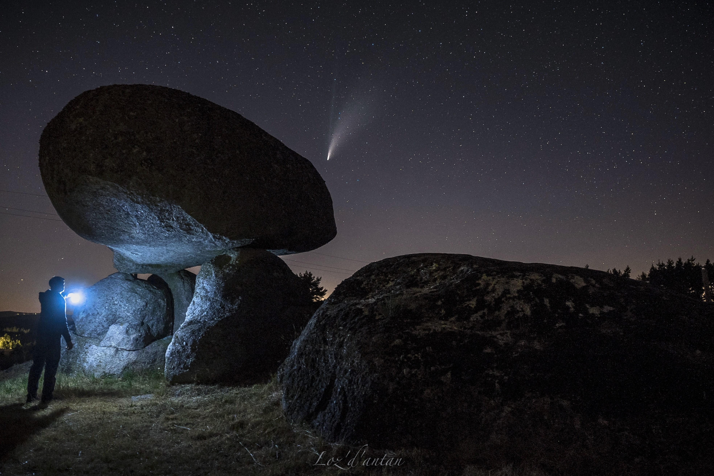
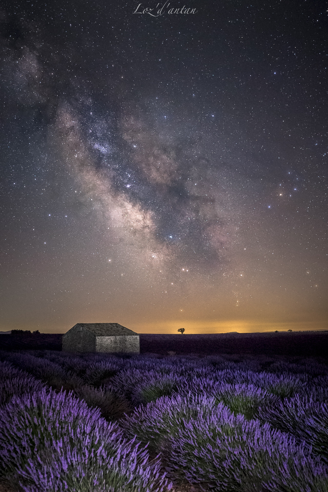
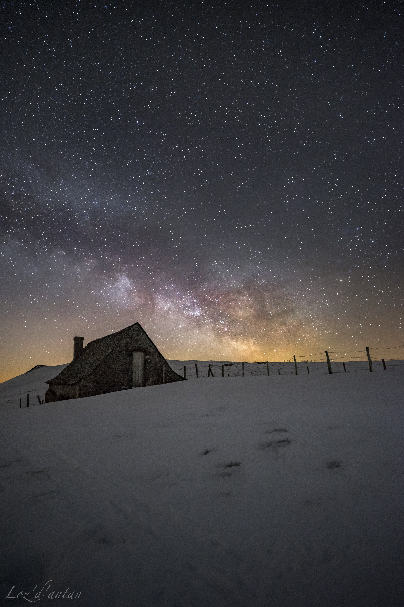
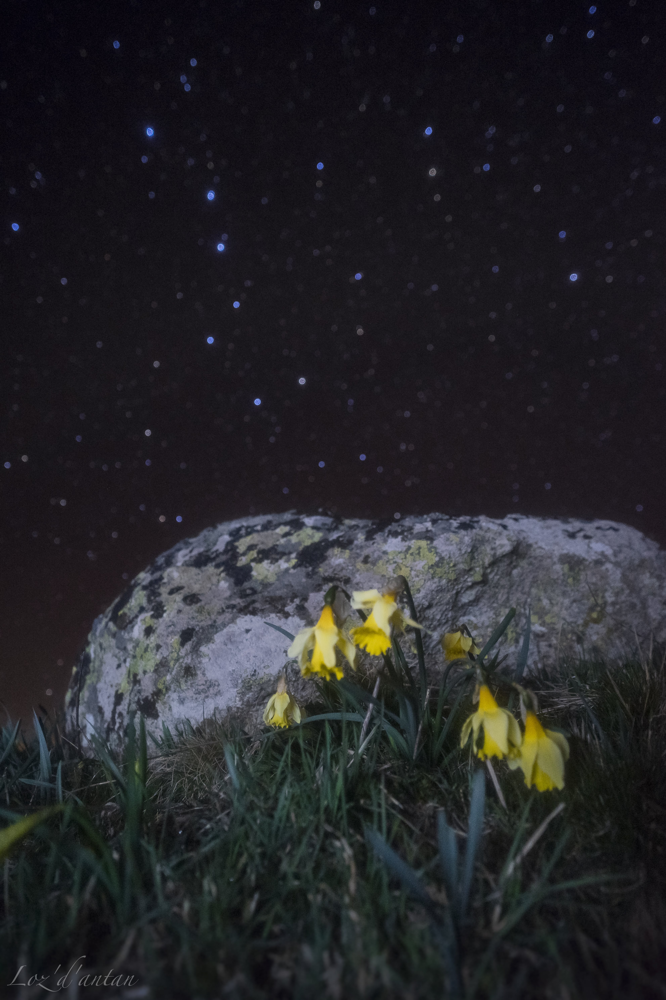
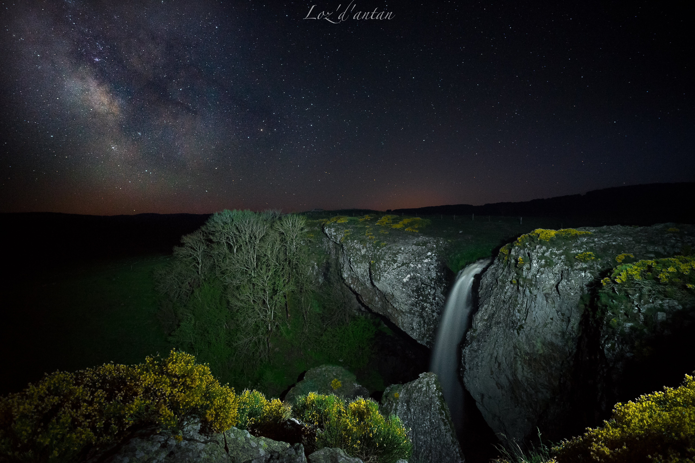
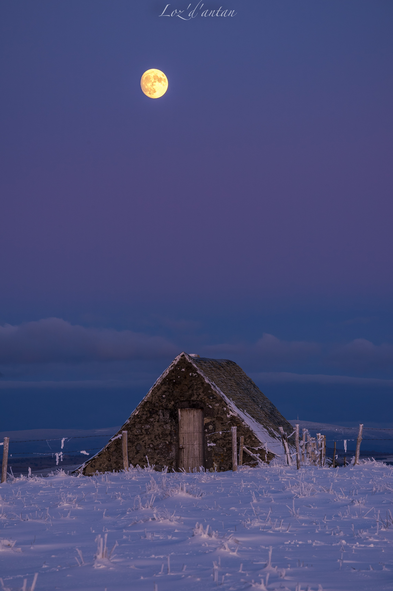
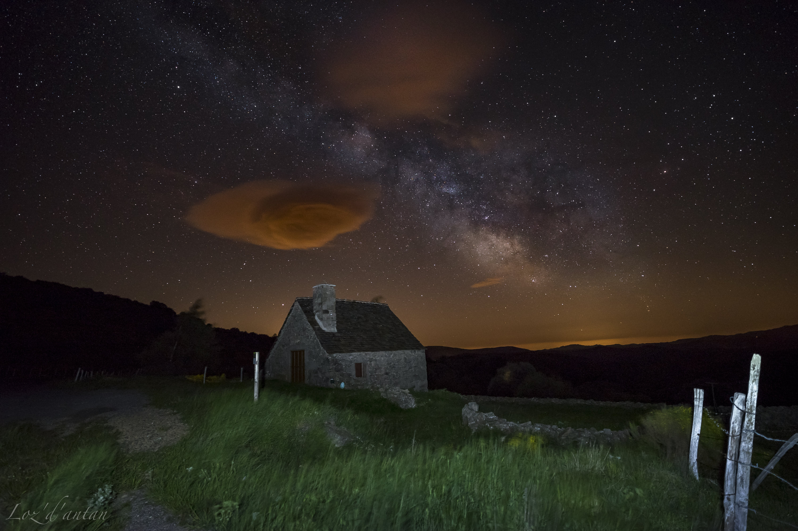
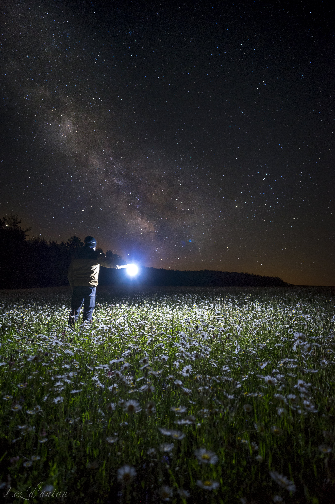
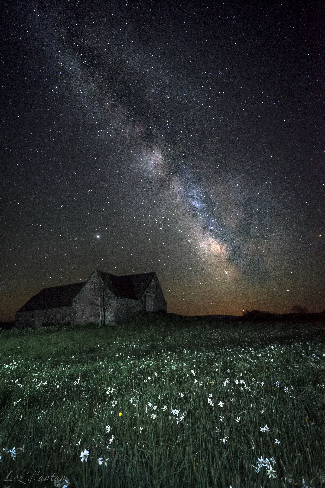

La comète Néowise

Valensole sous la voie lactée

Un buron d'Aubrac sous la voie lactée en Hiver

Les jonquilles d'Aubrac sous la Grande Ourse

Une voiture abandonnée sous la voie lactée

La Cascade du Déroc sous la voie lactée

Buron sous la voie lactée

Lever de lune à l'heure bleue

La Baraque de l'air sous la voie lactée

Champ de marguerites sous les étoiles
